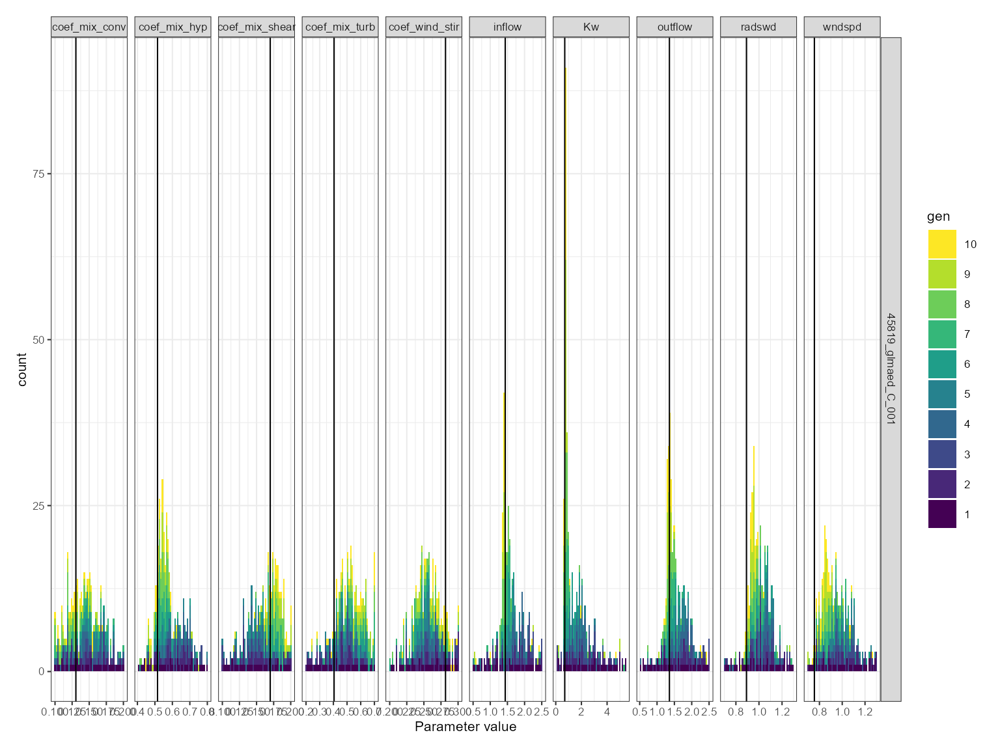
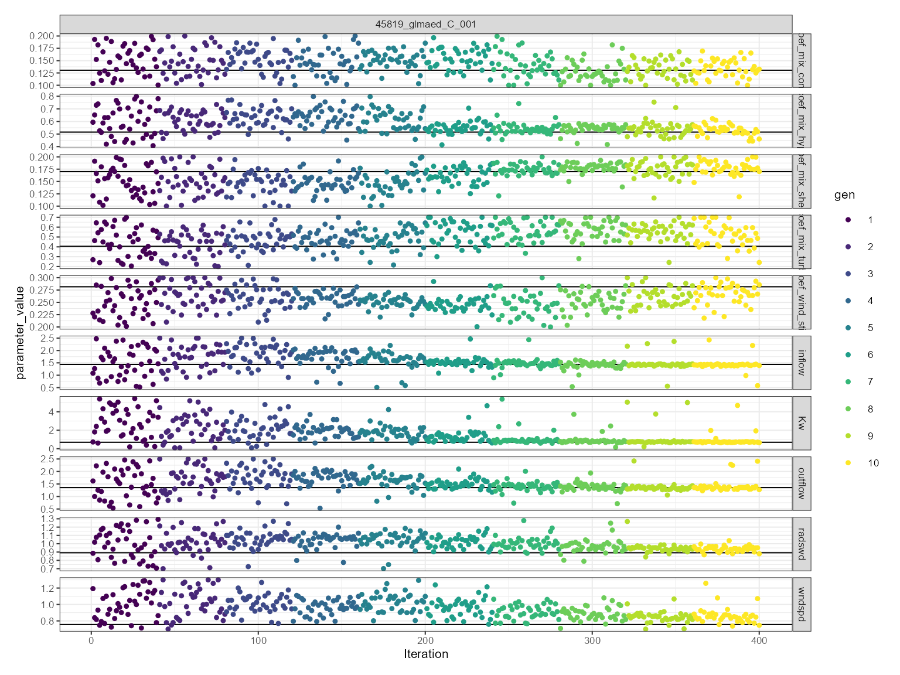

Setup
First, we will load the AEME and aemetools
package:
Create a folder for running the example calibration setup.
tmpdir <- "calib-test"
dir.create(tmpdir, showWarnings = FALSE)
aeme_dir <- system.file("extdata/lake/", package = "AEME")
# Copy files from package into tempdir
file.copy(aeme_dir, tmpdir, recursive = TRUE)
#> [1] TRUE
path <- file.path(tmpdir, "lake")
list.files(path, recursive = TRUE)
#> [1] "aeme.yaml" "data/catchment.dbf" "data/catchment.prj"
#> [4] "data/catchment.shp" "data/catchment.shx" "data/hypsograph.csv"
#> [7] "data/inflow_FWMT.csv" "data/lake.dbf" "data/lake.prj"
#> [10] "data/lake.shp" "data/lake.shx" "data/lake_obs.csv"
#> [13] "data/meteo.csv" "data/outflow.csv" "data/water_level.csv"
#> [16] "model_controls.csv"Build AEME ensemble
Using the AEME functions, we will build the AEME model
setup. For this example, we will use the glm_aed model. The
build_ensemble function will
aeme_data <- yaml_to_aeme(path = path, "aeme.yaml")
mod_ctrls <- read.csv(file.path(path, "model_controls.csv"))
inf_factor = c("dy_cd" = 1, "glm_aed" = 1, "gotm_wet" = 1)
outf_factor = c("dy_cd" = 1, "glm_aed" = 1, "gotm_wet" = 1)
model <- c("glm_aed")
aeme_data <- build_ensemble(path = path, aeme_data = aeme_data,
model = model, mod_ctrls = mod_ctrls,
inf_factor = inf_factor, ext_elev = 5,
use_bgc = FALSE)Run the model ensemble using the run_aeme function to
make sure the current model setup is working.
aeme_data <- run_aeme(aeme_data = aeme_data, model = model,
verbose = FALSE, mod_ctrls = mod_ctrls,
path = path)
#> Running models... (Have you tried parallelizing?) [2024-02-16 06:01:58]
#> GLM-AED run successful! [2024-02-16 06:01:59]
#> Model run complete![2024-02-16 06:01:59]
#> Retrieving and formatting temp for model glm_aed
#> Retrieving and formatting salt for model glm_aed
plot(aeme_data)
Simple plots of surface and bottom water temperarure an lake level after running AEME with the glm_aed model.
Load parameters to be used for the calibration
Parameters are loaded from the aemetools package within
the aeme_parameters dataframe. The parameters are stored in
a data frame with the following columns:
model: The model namefile: The file name of the model parameter filename: The parameter namevalue: The parameter valuemin: The minimum value of the parametermax: The maximum value of the parameter
Parameters to be used for the calibration. (man)
utils::data("aeme_parameters", package = "aemetools")
aeme_parameters| model | file | name | value | min | max | module | description | default | group |
|---|---|---|---|---|---|---|---|---|---|
| glm_aed | glm3.nml | light/Kw | 0.5811660 | 0.10 | 5.52e+00 | hydrodynamic | NA | NA | NA |
| glm_aed | met | MET_wndspd | 1.1437400 | 0.70 | 1.30e+00 | hydrodynamic | NA | NA | NA |
| glm_aed | met | MET_radswd | 0.9661150 | 0.70 | 1.30e+00 | hydrodynamic | NA | NA | NA |
| glm_aed | glm3.nml | outflow/seepage_rate | 0.0000000 | -0.01 | 0.00e+00 | hydrodynamic | NA | NA | NA |
| glm_aed | wdr | outflow | 1.0000000 | 0.50 | 2.50e+00 | hydrodynamic | NA | NA | NA |
| gotm_wet | gotm.yaml | turbulence/turb_param/k_min | 0.0000006 | 0.00 | 1.00e-05 | hydrodynamic | NA | NA | NA |
| gotm_wet | gotm.yaml | light_extinction/g2/constant_value | 0.2000000 | 0.05 | 2.70e+00 | hydrodynamic | NA | NA | NA |
| gotm_wet | met | MET_wndspd | 1.0691700 | 0.70 | 1.30e+00 | hydrodynamic | NA | NA | NA |
| gotm_wet | met | MET_radswd | 1.1734000 | 0.70 | 1.30e+00 | hydrodynamic | NA | NA | NA |
| gotm_wet | wdr | outflow | 1.0000000 | 0.50 | 2.50e+00 | hydrodynamic | NA | NA | NA |
| dy_cd | cfg | light_extinction_coefficient/7 | 0.9000000 | 0.10 | 1.40e+00 | hydrodynamic | NA | NA | NA |
| dy_cd | dyresm3p1.par | vertical_mixing_coeff/15 | 200.0000000 | 50.00 | 7.50e+02 | hydrodynamic | NA | NA | NA |
| dy_cd | met | MET_wndspd | 1.0000000 | 0.70 | 1.30e+00 | hydrodynamic | NA | NA | NA |
| dy_cd | met | MET_radswd | 1.0000000 | 0.70 | 1.30e+00 | hydrodynamic | NA | NA | NA |
| dy_cd | wdr | outflow | 1.0000000 | 0.50 | 2.50e+00 | hydrodynamic | NA | NA | NA |
This dataframe can be modified to change the parameter values. For
example, we can change the light/Kw parameter for the
glm_aed model to 0.1:
aeme_parameters[aeme_parameters$model == "glm_aed" &
aeme_parameters$name == "light/Kw", "value"] <- 0.1
aeme_parameters| model | file | name | value | min | max | module | description | default | group |
|---|---|---|---|---|---|---|---|---|---|
| glm_aed | glm3.nml | light/Kw | 0.1000000 | 0.10 | 5.52e+00 | hydrodynamic | NA | NA | NA |
| glm_aed | met | MET_wndspd | 1.1437400 | 0.70 | 1.30e+00 | hydrodynamic | NA | NA | NA |
| glm_aed | met | MET_radswd | 0.9661150 | 0.70 | 1.30e+00 | hydrodynamic | NA | NA | NA |
| glm_aed | glm3.nml | outflow/seepage_rate | 0.0000000 | -0.01 | 0.00e+00 | hydrodynamic | NA | NA | NA |
| glm_aed | wdr | outflow | 1.0000000 | 0.50 | 2.50e+00 | hydrodynamic | NA | NA | NA |
| gotm_wet | gotm.yaml | turbulence/turb_param/k_min | 0.0000006 | 0.00 | 1.00e-05 | hydrodynamic | NA | NA | NA |
| gotm_wet | gotm.yaml | light_extinction/g2/constant_value | 0.2000000 | 0.05 | 2.70e+00 | hydrodynamic | NA | NA | NA |
| gotm_wet | met | MET_wndspd | 1.0691700 | 0.70 | 1.30e+00 | hydrodynamic | NA | NA | NA |
| gotm_wet | met | MET_radswd | 1.1734000 | 0.70 | 1.30e+00 | hydrodynamic | NA | NA | NA |
| gotm_wet | wdr | outflow | 1.0000000 | 0.50 | 2.50e+00 | hydrodynamic | NA | NA | NA |
| dy_cd | cfg | light_extinction_coefficient/7 | 0.9000000 | 0.10 | 1.40e+00 | hydrodynamic | NA | NA | NA |
| dy_cd | dyresm3p1.par | vertical_mixing_coeff/15 | 200.0000000 | 50.00 | 7.50e+02 | hydrodynamic | NA | NA | NA |
| dy_cd | met | MET_wndspd | 1.0000000 | 0.70 | 1.30e+00 | hydrodynamic | NA | NA | NA |
| dy_cd | met | MET_radswd | 1.0000000 | 0.70 | 1.30e+00 | hydrodynamic | NA | NA | NA |
| dy_cd | wdr | outflow | 1.0000000 | 0.50 | 2.50e+00 | hydrodynamic | NA | NA | NA |
This dataframe can be passed to the run_aeme_param
function to run AEME with the parameter values specified in the
dataframe. This function is different to the run_aeme
function in that it does not return an aeme_data object,
but the model output is generate within the lake folder.
run_aeme_param(aeme_data = aeme_data, param = aeme_parameters,
model = model, path = path, mod_ctrls = mod_ctrls)
#> Running models... (Have you tried parallelizing?) [2024-02-16 06:02:08]
#> GLM-AED run successful! [2024-02-16 06:02:08]
#> Model run complete![2024-02-16 06:02:08]Calibration setup
Define fitness function
First, we will define a function for the calibration function to use
to calculate the fitness of the model. This function takes a dataframe
as an argument. The dataframe contains the observed data
(obs) and the modelled data (model). The
function should return a single value.
Here we use the root mean square error (RMSE) as the fitness function:
\[\text{RMSE}(y, \hat{y}) = \sqrt{\frac{\sum_{i=0}^{N - 1} (y_i - \hat{y}_i)^2}{N}}\]
Different functions can be applied to different variables. For example, we can use the RMSE for the lake level and the mean absolute error (MAE) for the water temperature:
Then these would be combined into a named list of functions which
will be passed to the calib_aeme function. They are named
according to the target variable.
# Create list of functions
FUN_list <- list(HYD_temp = mae, LKE_lvlwtr = rmse)Define control parameters
Next, we will define the control parameters for the calibration. The
control parameters are generated using the create_control
funtion and are then passed to the calib_aeme function. The
control parameters for calibration are as follows:
-
VTR: The value to reach. The calibration will stop when the fitness value is less than or equal to this value. For this example -
NP: The number of individuals in the population. Best practice is to use 10 times the number of parameters. -
itermax: The maximum number of iterations to run the calibration for. The calibration will stop when this number of iterations is reached. The number of generations used is equal toitermax / NP. Therefore, through adjustingNPanditermaxthe number of generations can be adjusted. -
reltol: The relative tolerance for the calibration. The calibration will stop when the relative change in the fitness value is less than this value. -
p: The quantile used to select the parents for the next generation. For example, ifp = 0.25, the best 25% of the population will be used as parents for the next generation. -
mutate: The mutation rate for the calibration. This is the probability of a parameter being mutated. -
parallel: Whether to run the calibration in parallel. This will decrease the time taken to run the calibration. -
out_file: The file to write the calibration results to. -
na_value: The value to use for missing values in the observed and predicted data. This is used to indicate when the model crashes and then can be easily removed from the calibration results. -
ncore: The number of cores to use for the calibration. This is only used ifparallel = TRUE.
Here is an example of the control parameters:
ctrl <- create_control(method = "calib", VTR = 1, NP = 40, itermax = 400,
reltol = 0.07, cutoff = 0.25, mutate = 0.1,
parallel = TRUE, out_file = "results.csv",
na_value = 999, ncore = 2L)Define variables
Next we will select the variables to use for the calibration. The
variables selected need to use the AEME variable definition e.g.
c("HYD_temp", "LKE_lvlwtr"). Weights need to be attributed
to each of the variables. The weights are used to scale the fitness
value. This can be helpful if the variables have different units. For
example, if the temperature is in degrees Celsius and the water level is
in metres, then the water level will have a much larger impact on the
fitness value. Therefore, the weight for the water level should be much
smaller than the weight for the temperature.
The weights are specified in a named vector. The names of the vector should be the same as the variable names.
Run calibration
Once we have defined the fitness function, control parameters and
variables, we can run the calibration. The calib_aeme
function takes the following arguments:
-
aeme_data: Theaeme_dataobject to use for the calibration. -
path: The path to the lake folder. -
param: The parameters to calibrate. -
model: The model to calibrate. -
mod_ctrls: The model controls to use for the calibration. -
FUN_list: The list of functions to use for each variable within the calibration. -
ctrl: The control parameters to use for the calibration. -
vars_sim: The variables to use for the calibration. -
weights: The weights to use for the calibration.
The calib_aeme function writes the calibration results
to the file specified after each generation. This allows the calibration
to be stopped and restarted at any time. The calib_aeme
function returns the ctrl object with any updated
values.
sim_id <- calib_aeme(aeme_data = aeme_data, path = path,
param = aeme_parameters, model = model,
mod_ctrls = mod_ctrls, FUN_list = FUN_list, ctrl = ctrl,
vars_sim = vars_sim, weights = weights)
#> Extracting indices for modelled variables [2024-02-16 06:02:09]
#> Complete! [2024-02-16 06:02:10]
#> Calibrating in parallel using 1 cores...
#> Starting generation 1/10, 40 members. [2024-02-16 06:02:10]
#> light/Kw MET_wndspd MET_radswd outflow/seepage_rate outflow
#> mean 2.815 0.9994 1.0020 -0.005016 1.5000
#> median 2.803 0.9937 1.0030 -0.004932 1.5050
#> sd 1.597 0.1758 0.1753 0.002932 0.5836
#> Best fit: 2.28 (sd: 488.57)
#> Parameters: [1.96, 1.13, 0.977, -0.00293, 0.916]
#> Writing output for generation 1 to simulation_data.csv with sim ID: 45819_glmaed_C_001 [2024-02-16 06:02:47]
#> Survival rate: 0.38
#> Starting generation 2/10, 40 members. [2024-02-16 06:02:47]
#> light/Kw MET_wndspd MET_radswd outflow/seepage_rate outflow
#> mean 2.729 0.9272 1.0980 -0.004722 1.0230
#> median 2.593 0.9450 1.1090 -0.004763 0.9338
#> sd 1.646 0.1967 0.1521 0.001521 0.3345
#> Writing output for generation 2 to simulation_data.csv with sim ID: 45819_glmaed_C_001 [2024-02-16 06:03:24]
#> Best fit: 2.2236 (sd: 265.85)
#> Survival rate: 0.92
#> Starting generation 3/10, 40 members. [2024-02-16 06:03:24]
#> light/Kw MET_wndspd MET_radswd outflow/seepage_rate outflow
#> mean 1.784 0.9196 1.068 -0.003729 0.9793
#> median 1.509 0.8849 1.081 -0.003330 0.9345
#> sd 1.453 0.1529 0.102 0.001474 0.2420
#> Writing output for generation 3 to simulation_data.csv with sim ID: 45819_glmaed_C_001 [2024-02-16 06:04:02]
#> Best fit: 2.1758 (sd: 219.99)
#> Survival rate: 0.95
#> Starting generation 4/10, 40 members. [2024-02-16 06:04:02]
#> light/Kw MET_wndspd MET_radswd outflow/seepage_rate outflow
#> mean 1.625 0.9464 1.079 -0.003522 0.9502
#> median 1.093 0.9243 1.094 -0.003353 0.9255
#> sd 1.645 0.1334 0.074 0.001359 0.1241
#> Writing output for generation 4 to simulation_data.csv with sim ID: 45819_glmaed_C_001 [2024-02-16 06:04:39]
#> Best fit: 2.1758 (sd: 219.99)
#> Survival rate: 0.95
#> Starting generation 5/10, 40 members. [2024-02-16 06:04:39]
#> light/Kw MET_wndspd MET_radswd outflow/seepage_rate outflow
#> mean 1.0010 0.9020 1.0960 -0.003481 0.94300
#> median 0.9358 0.8987 1.1190 -0.003295 0.94220
#> sd 0.7813 0.1235 0.0925 0.001121 0.08056
#> Writing output for generation 5 to simulation_data.csv with sim ID: 45819_glmaed_C_001 [2024-02-16 06:05:17]
#> Best fit: 2.1651 (sd: 0.14396)
#> Survival rate: 1
#> Starting generation 6/10, 40 members. [2024-02-16 06:05:17]
#> light/Kw MET_wndspd MET_radswd outflow/seepage_rate outflow
#> mean 0.7875 0.8848 1.09700 -0.003633 0.9889
#> median 0.7457 0.8753 1.11600 -0.003448 0.9425
#> sd 0.4760 0.1148 0.09406 0.001311 0.2742
#> Writing output for generation 6 to simulation_data.csv with sim ID: 45819_glmaed_C_001 [2024-02-16 06:05:54]
#> Best fit: 2.1651 (sd: 220.01)
#> Survival rate: 0.95
#> Starting generation 7/10, 40 members. [2024-02-16 06:05:54]
#> light/Kw MET_wndspd MET_radswd outflow/seepage_rate outflow
#> mean 0.8258 0.8725 1.11400 -0.003633 1.0760
#> median 0.4593 0.8529 1.13500 -0.003388 0.9435
#> sd 1.1170 0.1214 0.07731 0.001157 0.4109
#> Writing output for generation 7 to simulation_data.csv with sim ID: 45819_glmaed_C_001 [2024-02-16 06:06:32]
#> Best fit: 2.1571 (sd: 302.85)
#> Survival rate: 0.9
#> Starting generation 8/10, 40 members. [2024-02-16 06:06:32]
#> light/Kw MET_wndspd MET_radswd outflow/seepage_rate outflow
#> mean 0.5429 0.9360 1.13400 -0.0033670 0.9837
#> median 0.3912 0.9001 1.14900 -0.0034080 0.9419
#> sd 0.7686 0.1519 0.07687 0.0007529 0.1507
#> Writing output for generation 8 to simulation_data.csv with sim ID: 45819_glmaed_C_001 [2024-02-16 06:07:09]
#> Best fit: 2.1571 (sd: 265.9)
#> Survival rate: 0.92
#> Starting generation 9/10, 40 members. [2024-02-16 06:07:09]
#> light/Kw MET_wndspd MET_radswd outflow/seepage_rate outflow
#> mean 0.6320 0.9579 1.15200 -0.003619 0.9683
#> median 0.3695 0.9534 1.16300 -0.003484 0.9393
#> sd 0.9607 0.1224 0.06243 0.001163 0.2336
#> Writing output for generation 9 to simulation_data.csv with sim ID: 45819_glmaed_C_001 [2024-02-16 06:07:47]
#> Best fit: 2.1561 (sd: 220.02)
#> Survival rate: 0.95
#> Starting generation 10/10, 40 members. [2024-02-16 06:07:47]
#> light/Kw MET_wndspd MET_radswd outflow/seepage_rate outflow
#> mean 0.5791 0.9081 1.17200 -0.0034040 0.9882
#> median 0.3510 0.9106 1.18300 -0.0032440 0.9412
#> sd 0.7924 0.1485 0.04231 0.0009851 0.2004
#> Writing output for generation 10 to simulation_data.csv with sim ID: 45819_glmaed_C_001 [2024-02-16 06:08:25]
#> Best fit: 2.1549 (sd: 265.9)
#> Survival rate: 0.92Visualise calibration results
The calibrations results can be read in using the
read_calib function. This function takes the following
arguments:
-
ctrl: The control parameters used for the calibration. -
model: The model used for the calibration.
The read_calib function returns a dataframe with the
calibration results. The calibration results include the model,
generation, index (model run), parameter name, parameter value, fitness
value and the median fitness value for each generation.
These results can be visualised using the plot_calib
function. This function takes the following arguments:
-
calib: The calibration results as read in using theread_calibfunction. -
model: The model used for the calibration. -
ctrl: The control parameters used for the calibration.
And returns a list of ggplot objects: a dotty plot, density plot and convergence plot.
calib_res <- read_simulation_output(ctrl = ctrl, sim_id = sim_id)
plist <- plot_calib(calib = calib_res, na_value = ctrl$na_value)Dotty plot
This can be used for comparing sensitivity across parameters. The dotty plot shows the fitness value for each parameter value for each generation. The fitness value is on the y-axis and the parameter value is on the x-axis. It is faceted by the parameter name. The parameter values are coloured by the generation. The best fitness value for each generation is shown as a black line with a red dot.
plist$dotty
Histogram plot
This is useful for comparing the distribution of parameter values across generations. The histogram plot shows the frequency of the parameter values for each generation. The parameter values are on the x-axis and the density is on the y-axis. It is faceted by the parameter name.
If a parameter is converging on a value, then the histogram will show a peak around that value. If a parameter is not converging on a value, then the histogram will show a flat distribution.
plist$hist
Convergence plot
This is more generally used for assessing model convergence. The convergence plot shows the values use over the iterations. The parameter value is on the y-axis and the iteration is on the x-axis. It is faceted by the parameter name. The parameter values are coloured by the generation. The best fitness value for each generation is shown as a solid horizontal black line.
plist$convergence
Assess calibrated values
The best parameter values can be extracted using the
get_param function. This function takes the following
arguments:
-
calib: The calibration results as read in using theread_calibfunction. -
na_value: The value to use for missing values in the observed and predicted data. This is used to indicate when the model crashes and then can be easily removed from the calibration results. -
fit_col: The name of the column in the calibration results that contains the fitness value. Defaults tofit. -
best: A logical indicating whether to return the best parameter values or the entire calibration dataset. Defaults toFALSE.
best_params <- get_param(calib_res, na_value = ctrl$na_value, fit_col = "fit", best = TRUE)
best_params| sim_id | model | label | fit_type | parameter_value | fit_value | gen |
|---|---|---|---|---|---|---|
| 45819_glmaed_C_001 | glm_aed | Kw | fit | 0.3411110 | 2.15493 | 1 |
| 45819_glmaed_C_001 | glm_aed | outflow | fit | 0.9436190 | 2.15493 | 1 |
| 45819_glmaed_C_001 | glm_aed | radswd | fit | 1.1882000 | 2.15493 | 1 |
| 45819_glmaed_C_001 | glm_aed | seepage_rate | fit | -0.0031686 | 2.15493 | 1 |
| 45819_glmaed_C_001 | glm_aed | wndspd | fit | 0.9219450 | 2.15493 | 1 |
The best parameter values can be used to run the model and compare
the simulated values to the observed values. This can be done using the
run_aeme_param function.
aeme_data <- run_aeme_param(aeme_data = aeme_data, path = path,
param = best_params, model = model,
mod_ctrls = mod_ctrls, return_aeme = TRUE)
#> Running models... (Have you tried parallelizing?) [2024-02-16 06:08:30]
#> GLM-AED run successful! [2024-02-16 06:08:31]
#> Model run complete![2024-02-16 06:08:31]
#> Retrieving and formatting temp for model glm_aed
#> Retrieving and formatting salt for model glm_aedThe simulated values can be compared to the observed values using the
assess_model function. This function takes the following
arguments:
-
aeme_data: Theaeme_dataobject which has observations and model simulations. -
model: The model to assess. -
var_sim: The variables to use for the assessment.
The assess_model function returns:
?assess_model| assess_model | R Documentation |
Assess model performance
Value
Data frame with model performance statistics for each model and variable. These include:
-
bias - Bias
-
mae - Mean absolute error
-
rmse - Root mean square error
-
nmae - Normalised mean absolute error
-
nse - Nash-Sutcliffe efficiency
-
d2 - Index of agreement model skill score Willmott index
-
r - Pearson correlation coefficient
-
rs - Spearman correlation coefficient
-
r2 - R-squared value from linear model
-
B - Bardsley coefficient
-
n - number of observations
assess_model(aeme_data = aeme_data, model = model, var_sim = vars_sim)| Model | var_sim | bias | mae | rmse | nmae | nse | d2 | r | rs | r2 | B | n |
|---|---|---|---|---|---|---|---|---|---|---|---|---|
| GLM-AED | HYD_temp | -2.097 | 2.659 | 3.068 | 0.158 | 0.190 | 0.263 | 0.775 | 0.844 | 0.601 | 0.332 | 98 |
| GLM-AED | LKE_lvlwtr | 0.254 | 0.369 | 0.447 | 0.016 | -57.183 | 1.422 | -0.743 | -0.756 | 0.551 | 0.009 | 8 |
Visualise model performance
The model performance can be visualised using the
plot_resid function within the AEME package. This returns a
list of ggplot objects, a plot of residuals for each variable. This is a
multi-panel plot displaying residuals for:
- Observed vs. predicted values
- Residuals vs. predicted values
- Residuals vs. day of year
- Residuals vs. quantiles of the observed values
pl <- plot_resid(aeme_data = aeme_data, model = model, var_sim = vars_sim)